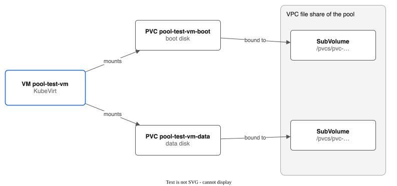
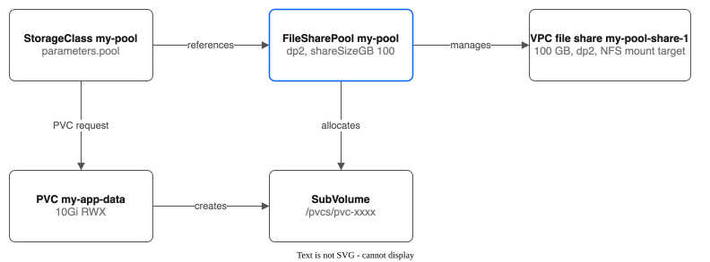

Part 1: Pool Creation, PVCs, and KubeVirt VMs¶
Tutorial Series: Index | Part 1 | Part 2: Snapshots & Clones | Part 3: Group Snapshots & Hooks | Part 4: Pool Configuration | Part 5: Golden Images | Part 6: Replication & Failover | Part 7: Monitoring | Part 8: Migration & Console | Part 9: COS Bucket for Backups
Step-by-step guide to create a file share pool, inspect it via IBM Cloud CLI, and attach NFS-backed storage to a KubeVirt VM as a shared data disk.
Cluster: ROKS eu-de (OpenShift Virtualization enabled) Zone: eu-de-1
Prerequisites¶
Verify the CSI driver is running:
# Controller pod (6/6 Running)
oc get pods -n kube-system -l app.kubernetes.io/name=ibm-vpc-file-pool-csi,app.kubernetes.io/component=controller
# Node pods (2/2 Running on each schedulable node)
oc get pods -n kube-system -l app.kubernetes.io/name=ibm-vpc-file-pool-csi,app.kubernetes.io/component=node
# CSI Driver registered
oc get csidriver vpc-file-pool.csi.ibm.io
Step 1: Clean Up Any Previous Test Resources¶
Resources must be deleted in the right order — VMs hold PVC mounts, PVCs cascade to SubVolume deletes, and pools have finalizers that block deletion while SubVolumes exist.
POOL_NAME=my-pool
TUTORIAL_NS=pool-tutorial
# 1. Delete VMs first (releases PVC mounts)
oc delete vm --all -n ${TUTORIAL_NS} --timeout=30s --ignore-not-found
# 2. Delete pods, PVCs, and other resources
oc delete pods --all -n ${TUTORIAL_NS} --force --grace-period=0 --ignore-not-found
oc delete pvc --all -n ${TUTORIAL_NS} --timeout=60s --ignore-not-found
# 3. Grace period for CSI to cascade SubVolume deletes
sleep 5
# 4. Force-clean orphan SubVolumes (if CSI cascade didn't finish)
for sv in $(oc get subvolumes.storage.ibmcloud.io \
-l storage.ibmcloud.io/pool=${POOL_NAME} -o name 2>/dev/null); do
oc patch "$sv" --type=merge -p '{"metadata":{"finalizers":null}}'
done
oc delete subvolumes.storage.ibmcloud.io \
-l storage.ibmcloud.io/pool=${POOL_NAME} --ignore-not-found
# 5. Delete pool (force-remove finalizer if stuck)
oc delete filesharepool ${POOL_NAME} --timeout=60s --ignore-not-found || {
oc patch filesharepools.storage.ibmcloud.io ${POOL_NAME} \
--type=merge -p '{"metadata":{"finalizers":null}}'
oc delete filesharepool ${POOL_NAME} --ignore-not-found
}
# 6. Delete namespace
oc delete namespace ${TUTORIAL_NS} --timeout=60s --ignore-not-found
# 7. Verify VPC shares are being deleted
ibmcloud is shares
Stuck namespace? If the namespace is stuck in
Terminatingfor more than 60 seconds, clear PVC and SubVolume finalizers — see Stuck Namespace Recovery below.
Step 2: Set Up Variables and Namespace¶
Choose a name for your pool. The controller automatically creates a StorageClass named after the pool when it reaches Ready.
# Set your pool name — used throughout the tutorial
export POOL_NAME=my-pool
# Create a namespace for tutorial resources
export TUTORIAL_NS=pool-tutorial
oc create namespace ${TUTORIAL_NS}
Use ibmcloud is shares to see existing VPC file shares before creating the pool.
Step 3: Create a FileSharePool¶
The examples use the zone eu-de-1. Use the zone of your workers instead: oc get nodes -L topology.kubernetes.io/zone.
cat <<EOF | oc apply -f -
apiVersion: storage.ibmcloud.io/v1alpha1
kind: FileSharePool
metadata:
name: ${POOL_NAME}
spec:
zone: eu-de-1
profile: dp2
shareSizeGB: 100
iops: 100
maxShares: 3
initialShares: 1
autoExpand: true
expandThresholdPercent: 80
allocationStrategy: spread
defaultPermissions: "0777"
defaultUID: 107
defaultGID: 107
EOF
What this does:
- Creates a pool named ${POOL_NAME} in eu-de-1
- Uses the dp2 profile with 100 IOPS
- Each share is 100 GB; up to 3 shares allowed
- 1 share is created immediately
- Auto-expands when 80% of capacity is allocated
- Each share's mount target uses the cluster's own security group (kube-<cluster ID>), which already lets every worker reach NFS. Set securityGroupIDs to use other groups
- defaultPermissions: "0777" — ensures the QEMU user (UID 107) can access subdirectories
- defaultUID: 107 / defaultGID: 107 — PVC subdirectories are chowned to the QEMU user, so KubeVirt's virt-handler skips its own chown (see KubeVirt NFS Permissions below)
Watch the pool initialize (takes 30-90 seconds for VPC share creation):
Wait until PHASE shows Ready:
Use ibmcloud is shares to see the new VPC file share that was created.
Step 4: Verify the Auto-Created StorageClass¶
When a FileSharePool reaches Ready, the controller automatically creates a matching StorageClass. You do not need to create one manually.
The auto-created StorageClass:
- Is named after the pool (e.g., ${POOL_NAME})
- Uses vpc-file-pool.csi.ibm.io as the provisioner
- Sets parameters.pool to the pool name
- Includes default NFS mount options (nfsvers=4.1,soft,timeo=600,retrans=3)
- Enables allowVolumeExpansion: true and reclaimPolicy: Delete
- Has an OwnerReference to the pool (deleted automatically when the pool is deleted)
For tiered pools, one StorageClass per tier is created (e.g., ${POOL_NAME}-standard, ${POOL_NAME}-premium), each with the tier parameter set.
Verify:
Opt-out: If you prefer to manage StorageClasses manually, add the annotation storage.ibmcloud.io/skip-storageclass: "true" to the FileSharePool before creating it, then create the StorageClass yourself:
cat <<EOF | oc apply -f -
apiVersion: storage.k8s.io/v1
kind: StorageClass
metadata:
name: ibm-vpc-file-pool
provisioner: vpc-file-pool.csi.ibm.io
parameters:
pool: ${POOL_NAME}
reclaimPolicy: Delete
volumeBindingMode: Immediate
allowVolumeExpansion: true
mountOptions:
- nfsvers=4.1
- soft
- timeo=600
- retrans=3
EOF
Step 5: Inspect the Pool via Kubernetes¶
# Summary view
oc get filesharepools
# Detailed status — shows shares, mount target IPs, capacity
oc describe filesharepool ${POOL_NAME}
# YAML view — full status with share IDs
oc get filesharepool ${POOL_NAME} -o yaml
Key things to note in the output:
- status.phase: Ready — pool is operational
- status.shares[0].shareID — the VPC file share ID (e.g., r010-xxxxxxxx-...)
- status.shares[0].mountTargetIP — the NFS server address (an IP address in the cluster's VPC)
- status.shares[0].state: stable — share is healthy
- status.totalCapacityGB / status.totalAllocatedGB — capacity tracking
Copy the shareID from the output — you'll use it in the next step.
Step 6: Verify the VPC File Share via IBM Cloud CLI¶
Use the share ID from Step 5 (replace <SHARE_ID> with your actual one):
# List all file shares in the account
ibmcloud is shares
# Get detailed info for the pool's share
ibmcloud is share <SHARE_ID>
Expected output shows:
- Name: ${POOL_NAME}-share-1
- Zone: eu-de-1
- Size: 100 GB
- Profile: dp2
- Lifecycle state: stable
Now inspect the mount target (the NFS endpoint):
# List mount targets for the share
ibmcloud is share-mount-targets <SHARE_ID>
# Get mount target details (shows the NFS mount path)
ibmcloud is share-mount-target <SHARE_ID> <MOUNT_TARGET_ID>
The mount_path field shows the NFS server and export path, e.g.:
This is the NFS server that worker nodes connect to when pods use PVCs from this pool.
Step 7: Test PVC Provisioning with a Simple Pod¶
Create a PVC and a pod to verify NFS storage works end-to-end:
cat <<EOF | oc apply -f -
apiVersion: v1
kind: PersistentVolumeClaim
metadata:
name: vm-shared-data
namespace: ${TUTORIAL_NS}
spec:
accessModes:
- ReadWriteMany
storageClassName: ${POOL_NAME}
resources:
requests:
storage: 10Gi
---
apiVersion: v1
kind: Pod
metadata:
name: pool-test-writer
namespace: ${TUTORIAL_NS}
spec:
containers:
- name: writer
image: busybox
command: ["sh", "-c", "echo 'Pool CSI NFS storage is working!' > /data/hello.txt && ls -la /data/ && cat /data/hello.txt && sleep 3600"]
volumeMounts:
- name: shared-data
mountPath: /data
volumes:
- name: shared-data
persistentVolumeClaim:
claimName: vm-shared-data
EOF
Watch the PVC bind and pod start:
oc get pvc vm-shared-data -n ${TUTORIAL_NS} -w
# Should show STATUS=Bound within seconds
oc get pod pool-test-writer -n ${TUTORIAL_NS} -w
# Wait for STATUS=Running, then:
oc logs pool-test-writer -n ${TUTORIAL_NS}
Expected output:
Verify the SubVolume and pool capacity:
Clean up the test pod (keep the PVC for now):
Step 8: Create a VM with a Pool-Backed Data Disk¶
KubeVirt VMs work with the pool CSI driver. The driver mounts NFS with sec=sys (matching the stock IBM VPC File CSI driver), which enables proper Unix UID/GID ownership. Configure the pool with defaultUID: 107 and defaultGID: 107 so subdirectories are owned by the QEMU user.
Note: This step creates regular PVCs on the pool and downloads the OS image directly. CDI registry import also works on a pool StorageClass; see KNOWN-LIMITATIONS.md.

Step 8a: Create the Boot and Data PVCs¶
cat <<EOF | oc apply -f -
apiVersion: v1
kind: PersistentVolumeClaim
metadata:
name: pool-test-vm-boot
namespace: ${TUTORIAL_NS}
spec:
accessModes:
- ReadWriteMany
storageClassName: ${POOL_NAME}
resources:
requests:
storage: 15Gi
---
apiVersion: v1
kind: PersistentVolumeClaim
metadata:
name: pool-test-vm-data
namespace: ${TUTORIAL_NS}
spec:
accessModes:
- ReadWriteMany
storageClassName: ${POOL_NAME}
resources:
requests:
storage: 10Gi
EOF
Both PVCs should bind immediately:
oc get pvc pool-test-vm-boot pool-test-vm-data -n ${TUTORIAL_NS}
# Both should show STATUS=Bound, STORAGECLASS=${POOL_NAME}
Step 8b: Download the OS Image to the Boot PVC¶
KubeVirt expects a raw format disk image named disk.img in a filesystem-mode PVC. Cloud images are distributed as qcow2, so we must convert to raw — CDI does this automatically, but here we do it by hand:
cat <<EOF | oc apply -f -
apiVersion: v1
kind: Pod
metadata:
name: image-downloader
namespace: ${TUTORIAL_NS}
spec:
restartPolicy: Never
containers:
- name: downloader
image: quay.io/centos/centos:stream9
command:
- sh
- -c
- |
dnf install -y qemu-img
echo "Downloading CentOS Stream 9 cloud image..."
curl -L -o /boot/disk.qcow2 \
https://cloud.centos.org/centos/9-stream/x86_64/images/CentOS-Stream-GenericCloud-9-latest.x86_64.qcow2
echo "Converting qcow2 to raw format..."
qemu-img convert -f qcow2 -O raw /boot/disk.qcow2 /boot/disk.img
rm /boot/disk.qcow2
chmod 0666 /boot/disk.img
chown 107:107 /boot/disk.img
ls -lh /boot/disk.img
qemu-img info /boot/disk.img
echo "Done!"
volumeMounts:
- name: boot-disk
mountPath: /boot
volumes:
- name: boot-disk
persistentVolumeClaim:
claimName: pool-test-vm-boot
EOF
Wait for the download and conversion to complete (~1.8 GB download + conversion, takes 2-5 minutes):
# Watch pod status
oc get pod image-downloader -n ${TUTORIAL_NS} -w
# Check progress (while running)
oc logs image-downloader -n ${TUTORIAL_NS} -f
# When STATUS=Completed, verify the image
oc logs image-downloader -n ${TUTORIAL_NS}
Expected output:
Downloading CentOS Stream 9 cloud image...
Converting qcow2 to raw format...
-rw-rw-rw-. 1 107 107 10G ... /boot/disk.img
file format: raw
virtual size: 10 GiB (10737418240 bytes)
disk size: 1.8 GiB
Done!
Note: The pod runs as root (needed to install
qemu-img). Due to NFSroot_squash, files are created as UID 65534 (nobody). Wechmod 0666andchown 107:107so the QEMU user (UID 107) can read and write the image. Without thechown, an instant VM snapshot of this disk fails (Part 11), because the driver changes the file mode from inside the VM pod, as UID 107. KubeVirt's pre-start expansion will resize the raw image to fill the PVC capacity.Why raw format? KubeVirt passes filesystem-PVC disk images to QEMU with
"driver":"file"(no qcow2 format layer). If the image is qcow2, QEMU reads the qcow2 headers as raw data and finds no valid boot sector — resulting in "No bootable device."
Clean up the downloader pod:
Step 8c: Create the VM¶
cat <<EOF | oc apply -f -
apiVersion: kubevirt.io/v1
kind: VirtualMachine
metadata:
name: pool-test-vm
namespace: ${TUTORIAL_NS}
spec:
instancetype:
kind: virtualmachineclusterinstancetype
name: u1.medium
preference:
kind: virtualmachineclusterpreference
name: centos.stream9
runStrategy: Always
template:
metadata:
labels:
network.kubevirt.io/headlessService: headless
spec:
domain:
devices:
disks:
- name: rootdisk
bootOrder: 1
- name: datadisk
serial: DATA0001
interfaces:
- masquerade: {}
name: default
networks:
- name: default
pod: {}
subdomain: headless
volumes:
- persistentVolumeClaim:
claimName: pool-test-vm-boot
name: rootdisk
- persistentVolumeClaim:
claimName: pool-test-vm-data
name: datadisk
- cloudInitNoCloud:
userData: |
#cloud-config
user: centos
password: pooltest123
chpasswd:
expire: false
name: cloudinitdisk
EOF
What this creates:
- Boot disk (rootdisk): CentOS Stream 9 image on the NFS pool (downloaded in Step 8b)
- Data disk (datadisk): 10 Gi blank disk on the NFS pool
- Both disks on NFS — no ODF/Ceph dependency, no CDI dependency
- Instance type: u1.medium (1 vCPU, 4 Gi RAM)
- Login: user centos, password pooltest123
Step 9: Wait for the VM to Start¶
# Watch VM status
oc get vm pool-test-vm -n ${TUTORIAL_NS} -w
# Watch the VMI (VirtualMachineInstance) start
oc get vmi pool-test-vm -n ${TUTORIAL_NS} -w
Both PVCs are already provisioned, so the VM should start quickly (30-60 seconds):
# Verify both PVCs are Bound on ${POOL_NAME}
oc get pvc pool-test-vm-boot pool-test-vm-data -n ${TUTORIAL_NS}
Wait until VM STATUS shows Running and VMI PHASE shows Running.
Step 10: Access the VM and Use the Data Disk¶
Connect to the VM console:
Login with centos / pooltest123, then:
# See all disks — the data disk should appear as /dev/vdb or similar
lsblk
# Format and mount the data disk
sudo mkfs.ext4 /dev/vdb
sudo mkdir -p /mnt/shared-data
sudo mount /dev/vdb /mnt/shared-data
# Write test data
echo "Hello from VM on pool CSI storage!" | sudo tee /mnt/shared-data/vm-test.txt
cat /mnt/shared-data/vm-test.txt
# Check disk space
df -h /mnt/shared-data
Press Ctrl+] to exit the console.
Step 11: Verify Pool State After Allocations¶
The manually created PVC (Step 7) and the VM's boot and data PVCs should all appear:
# Pool shows total allocated capacity and PVC count
oc get filesharepools
# Expected: ALLOCATED=35 (10 from Step 7, 15 boot disk, 10 data disk), PVCS=3
# Both SubVolumes point to the same underlying VPC file share
oc get subvolumes -o wide
# VPC share is unchanged (still stable, same size)
ibmcloud is shares
ibmcloud is share <SHARE_ID>
This demonstrates the pooling model: 3 PVCs share 1 VPC file share, saving VPC quota and provisioning time.
Step 12: Create a Second Manual PVC to See Capacity Grow¶
cat <<EOF | oc apply -f -
apiVersion: v1
kind: PersistentVolumeClaim
metadata:
name: vm-shared-data-2
namespace: ${TUTORIAL_NS}
spec:
accessModes:
- ReadWriteMany
storageClassName: ${POOL_NAME}
resources:
requests:
storage: 20Gi
EOF
# Check it bound
oc get pvc vm-shared-data-2 -n ${TUTORIAL_NS}
# Pool now shows 55 GB allocated, 4 PVCs — all on the same single VPC share
oc get filesharepools
# Four SubVolumes, all pointing to the same shareID
oc get subvolumes -o wide
Cleanup¶
Resources must be deleted in dependency order. Deleting the namespace alone can leave orphan SubVolumes and a stuck pool.
Full Cleanup¶
# 1. Delete VMs (releases PVC mounts so PVCs can delete)
oc delete vm --all -n ${TUTORIAL_NS} --timeout=30s
# 2. Wait for VMIs to terminate
for i in $(seq 1 15); do
oc get vmi -n ${TUTORIAL_NS} -o name 2>/dev/null | grep -q . || break
sleep 2
done
# 3. Delete pods and PVCs
oc delete pods --all -n ${TUTORIAL_NS} --force --grace-period=0
oc delete pvc --all -n ${TUTORIAL_NS} --timeout=60s
# 4. Grace period for CSI to cascade SubVolume deletes
sleep 5
# 5. Force-clean orphan SubVolumes (clear finalizers if CSI cascade didn't finish)
for sv in $(oc get subvolumes.storage.ibmcloud.io \
-l storage.ibmcloud.io/pool=${POOL_NAME} -o name 2>/dev/null); do
oc patch "$sv" --type=merge -p '{"metadata":{"finalizers":null}}'
done
oc delete subvolumes.storage.ibmcloud.io \
-l storage.ibmcloud.io/pool=${POOL_NAME} --ignore-not-found
# 6. Delete pool-owned PVs
oc get pv -o json | jq -r "
.items[]
| select(.spec.csi.driver == \"vpc-file-pool.csi.ibm.io\")
| select(.spec.csi.volumeAttributes.pool == \"${POOL_NAME}\")
| .metadata.name" | xargs -r oc delete pv
# 7. Delete pool (force-remove finalizer if stuck)
oc delete filesharepool ${POOL_NAME} --timeout=60s || {
oc patch filesharepools.storage.ibmcloud.io ${POOL_NAME} \
--type=merge -p '{"metadata":{"finalizers":null}}'
oc delete filesharepool ${POOL_NAME}
}
# 8. Delete StorageClass (auto-deleted with pool via OwnerReference,
# but delete manually if you created one yourself)
# oc delete sc ${POOL_NAME}
# 9. Delete namespace
oc delete namespace ${TUTORIAL_NS} --timeout=60s
# 10. Verify VPC shares are being deleted
ibmcloud is shares
Keep the Pool, Delete Only Workloads¶
If you want to keep the pool for another round of testing:
# Delete VMs and pods
oc delete vm --all -n ${TUTORIAL_NS} --timeout=30s
oc delete pods --all -n ${TUTORIAL_NS} --force --grace-period=0
# Delete PVCs (CSI cascades SubVolume deletes)
oc delete pvc --all -n ${TUTORIAL_NS} --timeout=60s
# Verify capacity is reclaimed
oc get filesharepools
# Expected: ALLOCATED=0, PVCS=0
Stuck Namespace Recovery¶
If the namespace is stuck in Terminating, a PVC finalizer is blocking deletion. Clear it:
# Clear PVC finalizers
for pvc in $(oc get pvc -n ${TUTORIAL_NS} -o name 2>/dev/null); do
oc patch "$pvc" -n ${TUTORIAL_NS} --type=merge \
-p '{"metadata":{"finalizers":null}}'
done
# SubVolumes are cluster-wide: they do not hold a namespace open. Do not clear
# their finalizers unless you know the volume is already gone.
The namespace should delete within a few seconds after clearing finalizers.
Quick Reference: Useful Commands¶
| What | Command |
|---|---|
| List pools | oc get filesharepools |
| Pool details | oc describe filesharepool <name> |
| List SubVolumes | oc get subvolumes -o wide |
| List VPC shares | ibmcloud is shares |
| Share details | ibmcloud is share <id> |
| Mount targets | ibmcloud is share-mount-targets <share-id> |
| CSI driver status | oc get csidriver vpc-file-pool.csi.ibm.io |
| Controller logs | oc logs -n kube-system -l app.kubernetes.io/component=controller -c csi-controller --tail=50 |
| Node agent logs | oc logs -n kube-system -l app.kubernetes.io/component=node -c csi-node --tail=50 |
| Webhook test | echo '{"apiVersion":"storage.ibmcloud.io/v1alpha1","kind":"FileSharePool","metadata":{"name":"bad"},"spec":{}}' \| oc apply -f - |
KubeVirt NFS Permissions¶
KubeVirt's virt-handler calls chown(mountDir, 107, 107) on every filesystem-mode PVC mount. This requires NFS to be mounted with sec=sys (AUTH_UNIX) so that Unix UID/GID credentials are sent in NFS RPCs and chown succeeds.
The CSI driver includes sec=sys in its default NFS mount options (matching the stock IBM VPC File CSI driver). VPC file shares also enforce root_squash — root (UID 0) is mapped to nobody (UID 65534) — but non-root UIDs pass through correctly with sec=sys.
Required pool configuration for KubeVirt:
This ensures subdirectories are created with UID 107 ownership, so virt-handler's chown call either succeeds or is a no-op (directory already has the correct owner).
Important: If mounting with custom StorageClass mountOptions, always include sec=sys. Omitting it causes NFS to negotiate sec=null (anonymous auth), which breaks chown and prevents VMs from starting.
See Known Limitations — KubeVirt NFS Permissions for more details.
How StorageClasses Link to Pools¶
When a FileSharePool reaches Ready, the controller auto-creates a StorageClass named after the pool. You can also create StorageClasses manually if you opt out of auto-creation.

- One StorageClass references one pool (via
parameters.pool) — auto-created by the controller - One pool manages one or more VPC file shares (auto-expands as needed)
- Each PVC creates a SubVolume (subdirectory on an existing share)
- Multiple PVCs share the same VPC file share — that's the pooling benefit
What's Next¶
Now that you have a working pool with PVCs and a VM, explore the rest of the tutorial series:
- Part 2: Snapshots & Clones — Create point-in-time snapshots, restore from them, and clone volumes (async)
- Part 3: Group Snapshots & Hooks — Group snapshots are not active yet; this part explains why and covers hooks
- Part 4: Pool Configuration — Multi-tier pools, allocation strategies, auto-expansion, and share draining
- Part 5: Golden Images — Optional golden image provisioning for KubeVirt (hidden in the console)
- Part 6: Replication & Failover — Cross-region DR with direct NFS and driver-to-driver modes
- Part 7: Monitoring — Prometheus metrics, alerts, and Grafana dashboards
- Part 8: Migration & Console — PVC migration tool and OpenShift console plugin
- Part 9: COS Bucket for Backups — Locked COS bucket, a restricted key, and a CBR rule